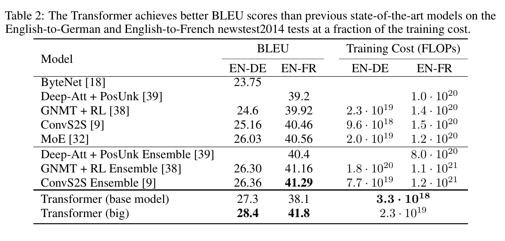

在 WMT 2014 English-to-German 上，Transformer big 达到 28.4 BLEU，base 达到 27.3；在 English-to-French 上，big 达到 41.8 BLEU。论文还报告 big 模型在 8 张 P100 GPU 上训练 3.5 天，并用估算 FLOP 与此前系统比较。 [T02] [p.8]
Table 2：WMT 2014 翻译 BLEU 与训练 FLOP 比较。 〔T02〕

Transformer big 的 En-De 28.4 和 En-Fr 41.8 是表中关键结果；base 也以较低估算代价取得较强 En-De 结果。
[T02] [p.8]
不能。Table 1 的 O(1) 是顺序操作和路径长度的渐近性质，注意力仍有随 n² 增长的层计算和内存压力。论文证明的是其报告设置下的质量与并行化组合，而不是硬件无关的速度定理。 [T01] [T02] [p.6] [p.8]